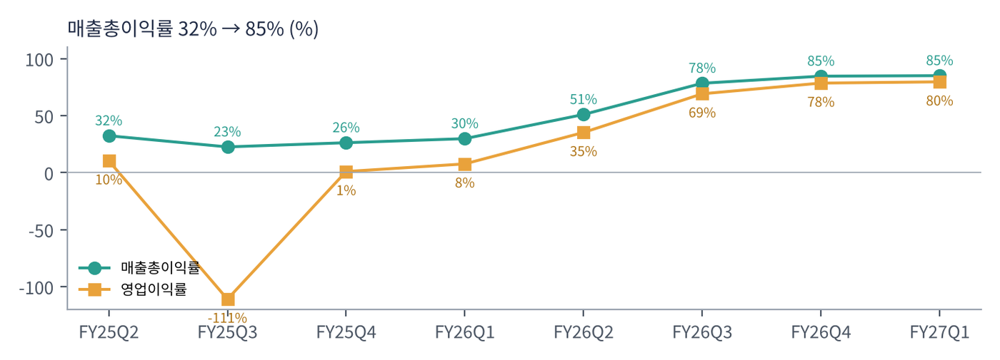

샌디스크는 낸드 플래시 메모리와 SSD(저장장치)를 만드는 회사다. 2016년 웨스턴디지털에 인수됐다가 2025년 2월 다시 분리 상장했다. 일본 키옥시아와 합작으로 공장을 운영하며, 낸드 시장에서 삼성전자·SK하이닉스·키옥시아·마이크론과 경쟁한다. 분리 직후인 2025년 3월 분기에는 영업권 손상으로 대규모 적자를 냈지만, 1년 반 만에 세계에서 가장 수익성 높은 반도체 회사 중 하나가 됐다.
| 항목 | 내용 |
|---|---|
| 종목 | Sandisk Corporation (SNDK) · 메모리 반도체 · 2025년 2월 분리 상장 · 본사 캘리포니아주 밀피타스 |
| 경영진 | 데이비드 고클러 회장 겸 CEO |
| 시가총액 | 약 $1,188억 · PER 8.6배 (트레이딩뷰, 11/6 종가 기준) |
| 최근 분기(1Q FY27) | 매출 $110.3억, 순이익 $81.0억, 영업현금 $63.6억 |
| 주식 분할 | 8대1, 11/9 기준 주주에게 1주당 7주 추가, 11/20부터 분할 후 거래 |
| 분기(회계) | 매출 | 매출총이익률 | 영업이익 | 순이익 | 영업현금 | 특이 사항 |
|---|---|---|---|---|---|---|
| FY25 2Q | $18.8억 | 32.3% | $2.0억 | $1.0억 | $1.0억 | 분리 상장 전 |
| FY25 3Q | $17.0억 | 22.5% | -$18.8억 | -$19.3억 | $0.3억 | 영업권 손상 |
| FY25 4Q | $19.0억 | 26.2% | $0.2억 | -$0.2억 | $0.9억 | 업황 바닥 |
| FY26 1Q | $23.1억 | 29.8% | $1.8억 | $1.1억 | $4.9억 | 회복 시작 |
| FY26 2Q | $30.3억 | 50.9% | $10.7억 | $8.0억 | $10.2억 | 가격 급등 |
| FY26 3Q | $59.5억 | 78.4% | $41.1억 | $36.2억 | $30.4억 | 매출 2배 |
| FY26 4Q | $89.7억 | 84.6% | $70.4억 | $69.0억 | $71.3억 | |
| FY27 1Q | $110.3억 | 85.0% | $87.8억 | $81.0억 | $63.6억 | 사상 최대 |

메모리 슈퍼사이클의 교과서다. 매출은 다섯 분기 연속 늘었고, 특히 FY26 2Q → 3Q에 2배, 3Q → 4Q에 1.5배가 됐다. 판매량이 이만큼 늘 수는 없으므로 대부분이 가격 상승 효과다. AI 데이터센터가 대용량 SSD를 대량으로 사들이고, 공급사들이 2023년 불황 때 투자를 줄였던 탓에 공급이 따라가지 못했다.

매출총이익률 85%는 반도체 업계에서도 거의 없는 숫자다. 공장 원가는 거의 그대로인데 판매 가격이 몇 배로 오르면, 늘어난 매출이 대부분 이익이 된다. 영업비용은 분기 $6억 수준으로 거의 고정이라 영업이익률이 80%에 이른다.


설비투자가 거의 없다. 분기 설비투자는 $4~5천만 달러로, 영업현금의 1%도 안 된다. 키옥시아와의 합작 공장 투자가 별도로 처리되기 때문으로 보인다. 쏟아지는 현금은 자사주 매입($50억/분기)으로 돌아가고 있다.
| 항목 | GAAP | 비GAAP |
|---|---|---|
| 매출 | $122~126억 (전 분기 대비 +11~14%) | |
| 매출총이익률 | 84.4~85.4% | 84.5~85.5% |
| 영업비용 | $6.77~7.45억 | $5.40~5.60억 |
| EPS (분할 전) | — | $55~57 (분할 후 약 $6.9~7.1) |
트레이딩뷰 SNDK 일봉 300개(2025.8 ~ 2026.11.6)와 주봉으로 계산했다. 결론부터 말하면 $52에서 $2,354까지 45배 오른 뒤 65% 빠졌다. 실적은 계속 좋아지는데 주가는 6월에 정점을 찍었다. 전형적인 '이익 정점 선반영' 패턴이다.


위: 주봉 재구성 차트. 아래: 트레이딩뷰 일봉 캡처(작도 없이 이동평균선·볼린저밴드만 표시).
| 이동평균 | 값 | 종가 대비 | 해석 |
|---|---|---|---|
| 5일선 | $976 | -14.4% | 11월 첫 주 -28% |
| 20일선 | $1,250 | -33.2% | |
| 50일선 | $1,504 | -44.5% | |
| 100일선 | $1,559 | -46.4% | 8~10월 박스 중심 |
| 200일선 | $1,272 | -34.4% | 10월 말 이탈 |
주봉 흐름: 2025년 9월 $52 → 11월 $285(가격 인상 시작) → 2026년 1월 한 달 만에 $275 → $676 → 4~5월 $700 → $1,564 → 6/22 $2,354 정점 → 7월 말 $998까지 -58% → 8~10월 $1,400~1,900 박스 → 10/29 실적 후 하락 가속, 11월 첫 주 -28%, 장중 $804 → $835 마감.
| 규칙 | 기준 | 현재 값 | 신호 |
|---|---|---|---|
| 장기 추세 필터 | 종가 vs 200일선 | $835 < $1,272 | 매도 |
| 중장기 교차 | 50일선 vs 200일선 | $1,504 > $1,272 | 매수 |
| 단기 교차 | 20일선 vs 50일선 | $1,250 < $1,504 | 매도 |
| 돈키언 채널 | 55일 고가 $1,909 / 저가 $804 | 중간값 $1,357 아래 | 매도 |
| 1개월 모멘텀 | 21거래일 수익률 | -48.1% (기준 $1,609) | 매도 |
| 3개월 모멘텀 | 63거래일 수익률 | -32.5% (기준 $1,238) | 매도 |
| 6개월 모멘텀 | 126거래일 수익률 | -46.6% (기준 $1,562) | 매도 |
| 12개월 모멘텀 | 252거래일 수익률 | +285.7% (기준 $216.5) | 매수 |
| 종합 (8개 평균) | -0.50 | 매도 | |
해석: 12개월 모멘텀만 압도적 플러스이고 나머지는 거의 다 매도다. 12개월 기준가가 2026년 1월 이후 $400~700대로 빠르게 올라가므로 2027년 초에는 이 신호도 꺾일 가능성이 크다. 50일선이 200일선을 향해 빠르게 내려와 데드크로스도 시간 문제다. 14일 ATR $107(12.9%)로 6종목 중 변동성이 가장 크다.
| 가격 | 무엇이 바뀌나 | 의미 |
|---|---|---|
| $976 ~ 1,000 | 5일선, 심리적 $1,000 | 단기 반등 1차 목표 |
| $1,238 ~ 1,272 | 3개월 기준, 200일선, 20일선 | 3개 신호 매수 전환 |
| $804 이탈 | 55일 저점 | 2026년 4월 수준($700대)까지 열림 |
| 구분 | 가격대 | 근거 |
|---|---|---|
| 저항 2 | $1,230 ~ 1,300 | 200·20일선, 10월 셋째 주 박스 |
| 저항 1 | $975 ~ 1,000 | 7월 말 저점($998), 5일선 |
| 지지 1 | $800 ~ 835 | 11/5 저점 |
| 지지 2 | $690 ~ 720 | 2026년 3~4월 박스 |
기본 판단: 사이클 주식은 PER이 가장 낮을 때가 가장 위험할 수 있다. 메모리 주식은 이익이 정점일 때 PER이 가장 낮고, 이익이 바닥일 때 PER이 가장 높다. PER 8.6배와 매출총이익률 85%는 이번 사이클이 정점 부근이라는 시장의 해석이다. 가이던스의 매출 증가 폭이 +23%에서 +12%로 줄어드는 것도 그 근거다. 공급사들이 증설에 나서는 2027년 이후 가격이 꺾이기 시작하면 이익은 빠르게 줄 수 있다.
| 가격대 | 시나리오 | 대응 |
|---|---|---|
| $1,250 이상 | 추세 회복 | 2차 익절 |
| $975 ~ 1,000 | 1차 반등 | 1차 익절 |
| $800 ~ 835 | 바닥 탐색 | 관망 또는 소량 |
| $760 이하 종가 | 지지 붕괴 | 손절 |
| 최종 시장 | 돈을 버는 방식 | 1Q FY27 | 1년 전 |
|---|---|---|---|
| 데이터센터 | AI·클라우드 서버용 대용량 엔터프라이즈 SSD(QLC 등) | $48.0억 | $2.7억 |
| 엣지 | PC·스마트폰·자동차용 낸드·SSD | $58.3억 | $13.9억 |
| 소비자 | USB·메모리카드·외장 SSD(샌디스크 브랜드) | $4.0억 | $6.5억 |
데이터센터 매출이 1년 만에 18배가 됐다. AI 학습 데이터와 추론 결과, 에이전트 기록을 저장하는 데 대용량 SSD가 필요해졌다. 엣지 매출도 4배가 됐는데, 이는 판매량보다 가격 상승 효과가 크다. 소비자 매출이 줄어든 것은 회사가 수익성 높은 데이터센터·엣지 쪽으로 물량을 돌렸기 때문으로 보인다.
고클러 CEO의 1분기 메시지다. "제품에 대한 강하고 늘어나는 수요로 데이터센터 사업이 가장 빠르게 성장했다. 투자자의 날에 제시한 전략, 즉 기술 리더십·깊은 고객 파트너십·규율 있는 재무 관리를 통해 성장하고 지속 가능한 잉여현금흐름을 만드는 전략을 실행하고 있다."
| 축 | 내용 |
|---|---|
| 기술 | 키옥시아와 공동 개발하는 고적층 BiCS 낸드. 대용량 QLC SSD로 데이터센터 공략 |
| 고객 파트너십 | 하이퍼스케일러와 장기 공급 계약으로 '사이클'을 완화하려는 시도 |
| 재무 규율 | 설비투자 절제(공급 과잉 방지), 자사주 대규모 매입, 주식 분할로 접근성 확대 |
| 항목 | 회사의 말 (1Q FY27) | 읽는 법 |
|---|---|---|
| 수요 | "강하고 늘어나는 수요." 데이터센터 매출 전 분기 +61% | AI 저장 수요 지속 |
| 전망 | 2Q 매출 $122~126억, 매출총이익률 85% 내외 유지 | 가격은 아직 꺾이지 않음 |
| 주주환원 | 분기 $50억 자사주 매입, 8대1 분할 | 현금 자신감 |
수요 코멘트에는 둔화 신호가 없다. 다만 성장률이 자연스럽게 낮아지고 있고(+97% → +51% → +23% → +12% 가이던스, 전 분기 대비), 시장은 '증가율의 둔화'를 '정점'으로 읽는다. 마이크론·SK하이닉스 등 메모리 업계 전반이 같은 질문을 받고 있다.
매출 비중 44%. AI 서버당 SSD 탑재량이 계속 늘고 있다. 하이퍼스케일러와의 장기 계약이 이 부문의 가격 안정성을 결정한다.
AI PC·AI 스마트폰의 저장 용량 증가가 수요를 받친다. 다만 PC·스마트폰 판매량이 메모리 가격 상승으로 줄면 역풍이 된다.
비중 4%로 줄었다. 브랜드 사업이지만 수익성 우선 배분에서 밀렸다.
1분기 영업현금 $63.6억, 두 분기 영업현금 $135억. 이익의 대부분이 실제 현금으로 들어오고 있다.
| 경쟁/리스크 | 내용 | 강도 |
|---|---|---|
| 사이클 | 낸드 가격이 꺾이면 이익이 빠르게 줄어듦. 85% 마진은 지속되기 어려운 수준 | 높음 |
| 경쟁사 증설 | 삼성전자·SK하이닉스·마이크론·키옥시아·YMTC의 증설 | 높음 |
| 수요 파괴 | 메모리 가격 급등으로 PC·스마트폰 판매 감소 | 중간 |
| 키옥시아 의존 | 공장을 공동 운영. 합작 관계 변화가 공급에 영향 | 중간 |
| 변동성 | ATR 12.9%, 분할 이벤트 전후 수급 변동 | 참고 |
11/20 분할 후 거래, 2분기 실적(1월 말), 낸드 계약 가격 추이가 핵심이다. 실적이 좋아도 주가는 '다음 분기 성장률'에 반응할 것이다.
AI 저장 수요가 공급 증가보다 오래 빠르게 늘면 이번 사이클은 과거보다 길어질 수 있다. 반대로 2027~2028년 증설이 몰리면 이익이 크게 줄어드는 전형적인 사이클이 반복된다.